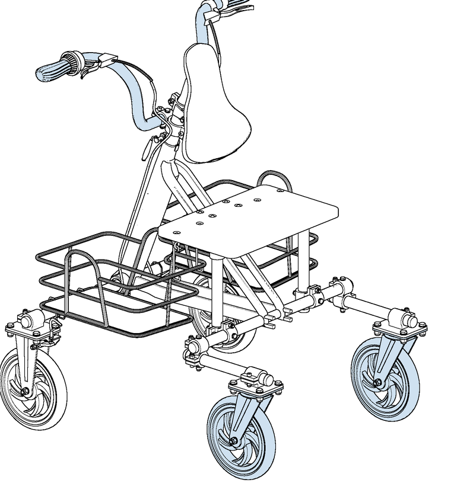
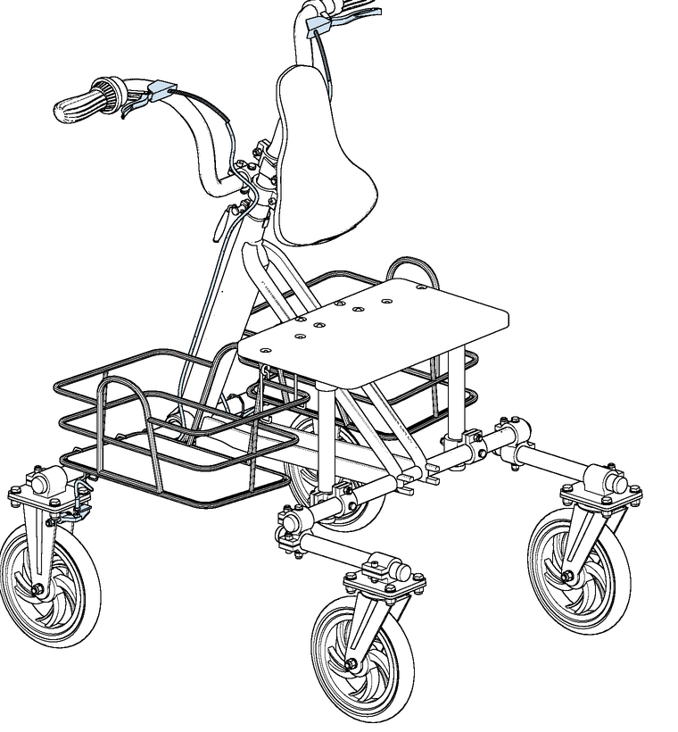
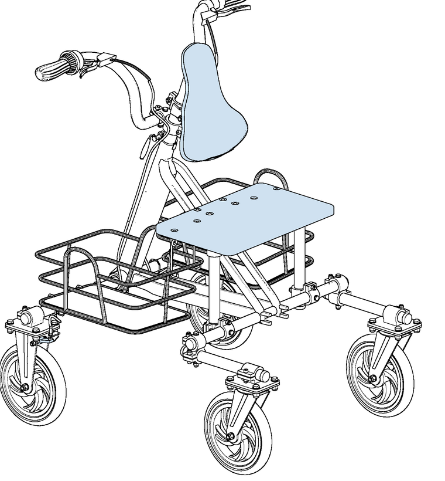
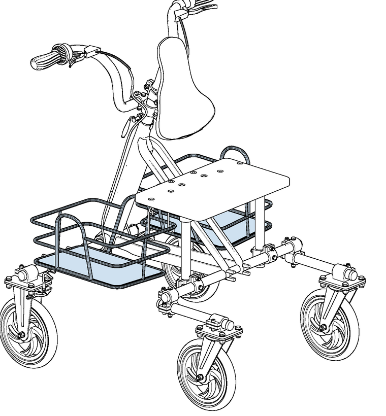

Push, brake, sit and carry use the controls a cyclist already knows.

aHold both grips. The front casters swivel; the fixed rear casters keep the walker tracking straight.

bSqueeze the original brake levers. Each cable pulls a lever-arm brake against a rear caster tyre.

cBrake, turn round and sit on the 520 mm plywood seat. The bike saddle, mounted upside down on the seat post, becomes the backrest.

dTwo Hello baskets hang either side of the frame, low and between the wheels, so a load lowers the centre of gravity.